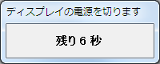

10秒後にディスプレイの電源を切るソフト
View the Project on GitHub gunjiro/DisplayCurtain

DisplayCurtainはディスプレイの電源を切るためのWindows向けアプリケーションです。
起動するとダイアログが表示され、10秒後にディスプレイの電源が切れます。
ダイアログが表示されている間にコンピューターをロックしましょう。
ダウンロード
DisplayCurtainはMIT Licenseのソフトウェアです。
ソースコードを見る